Importing SOEMPI source into Eclipse
After installing m2e plugin into Eclipse let's import SOEMPI Maven project!
- Right click on the "Project Explorer" view,
"Import" > "Import...", select "Maven", "Existing Maven Projects".
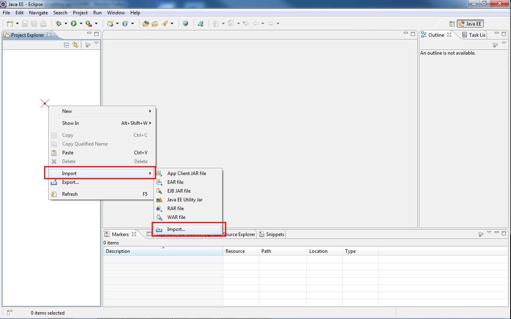
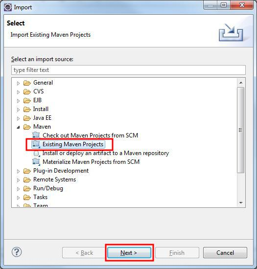
- Next, "Browse...", go to SOEMPI/openempi folder, "OK", the plugin will analyze poms and a
check treeview will appear with one root pom.xml and 6 child pom.xmls. Click Next and wait.

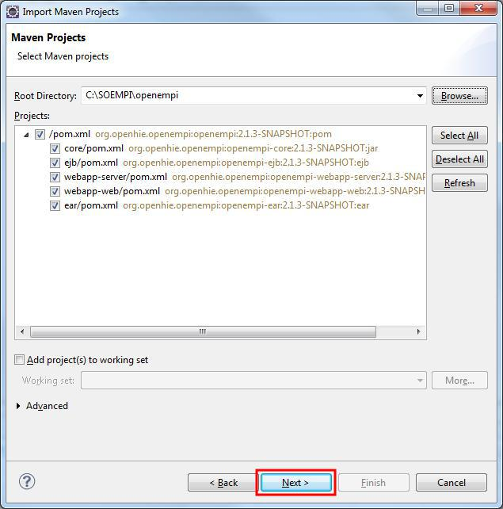
- Click on Finish, when it is enabled. On MacOS X the button's order is different, the Finish is the rightmost.
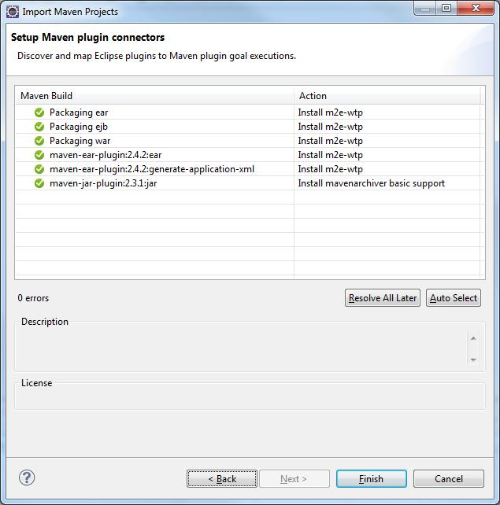
- You'll be prompted with installation of two more m2e/Maven plugins:
m2e connector for mavenarchiver and Maven Integration for WTP.
Select "Next" in this new dialog, "Next", check "I accept the terms..", "Finish".
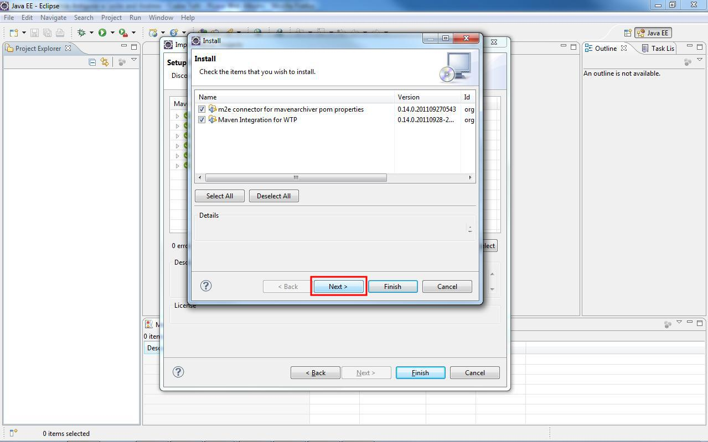
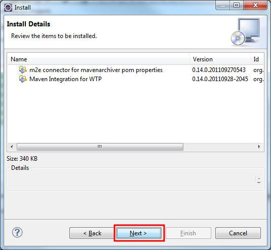
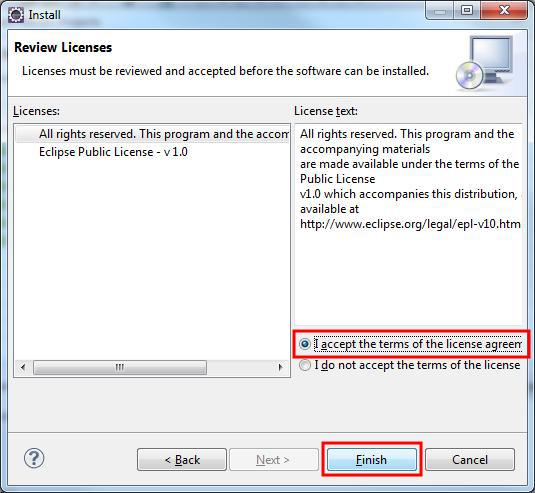
- Click "OK" to the warning of installing unsigned content when it pops up.
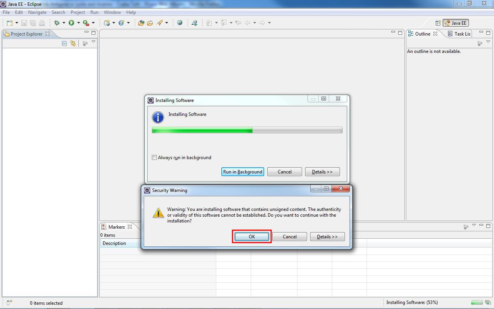
- Wait until the compilation stops (look at the bottom right section of the notificaton area).
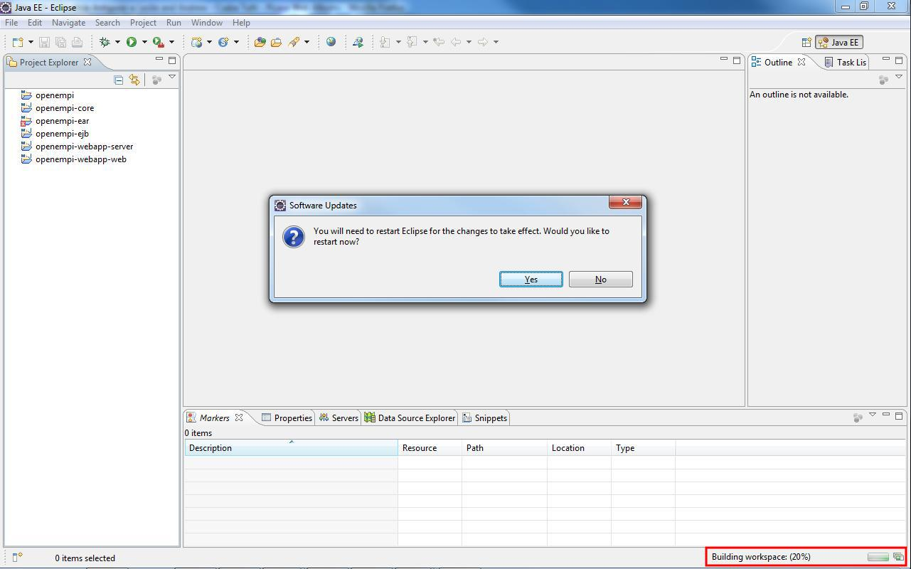
- Restart Eclipse when prompted. Wait until the compilation settles.
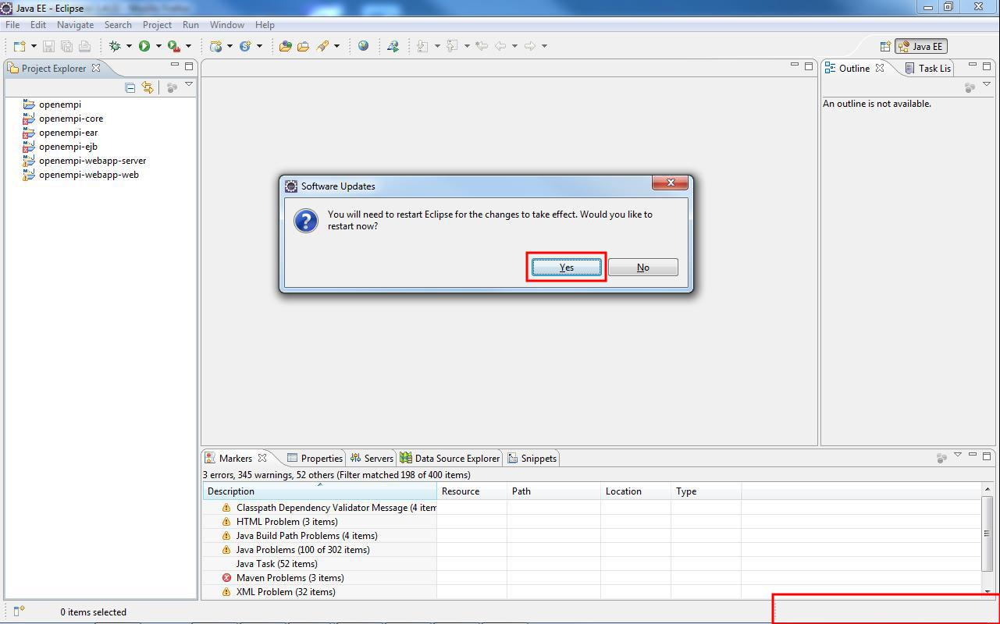
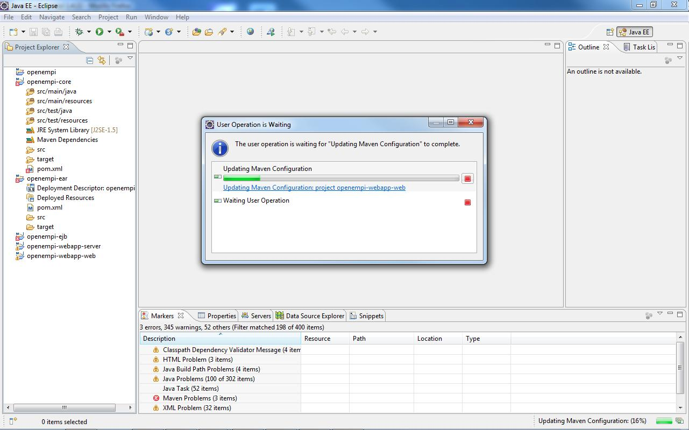